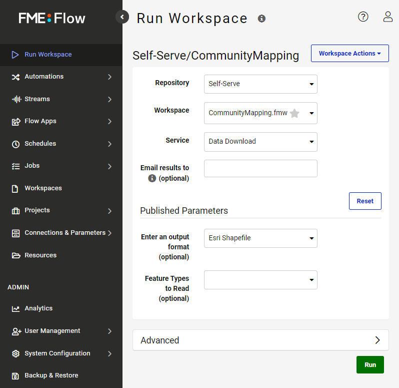
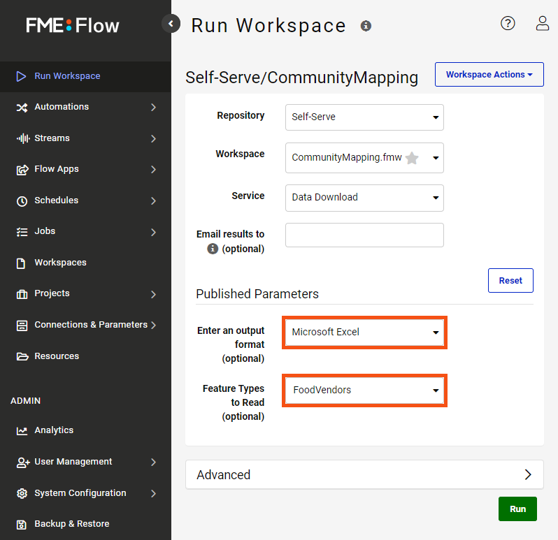
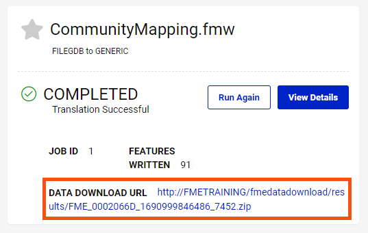

After completing this lesson, you’ll be able to:
Frank is ready to test his self-serve workspace. He clicks the link from the Translation Log (http://localhost/fmeserver/workspaces/run/Self-Serve/CommunityMapping.fmw/) to open the workspace in FME Flow (2025.0 or later).
He logs into FME Flow and sees the Run Workspace page.

He leaves the default settings at the top part of the interface. Under the Published Parameters heading, he selects "Excel" from the Output Format drop-down. He wants a current extract of the FoodVendors table, so he looks at the Feature Types to Read. He clicks the drop-down and selects “FoodVendors” from the list.

Then, he clicks Run to request the data.
Because he used the Data Download service, he is taken to a page with a link to a ZIP file of the results when the workspace finishes running. He clicks it to download.

He finds the ZIP file in his local Downloads folder and extracts it. He has received the FoodVendors data as an Excel file in CommunityMapping.zip. Now, he can send the self-serve link to any end-user, and they can download their desired data.
Try running Frank’s original workspace, but this time, request an extract of the Libraries table in GeoJSON. Open the results in your preferred application and examine them. Use the results to answer the quiz question below.